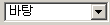
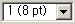
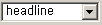
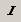
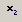
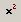
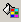

| 1. |
엔터 |
문단이 변경 됩니다. |
| 2. |
Shift + 엔터 |
문단은 변경되지 않고 줄변경 |
| 3. |
 |
폰트 설정 |
| 4. |
 |
폰트 사이즈 설정 |
| 5. |
 |
headline : 굶게, arial red : arial폰트체에 빨강색,
verdana blue, verdana폰트체에 파랑색 |
| 6. |
|
폰트 진하게 |
| 7. |
 |
폰트 이탤릭체 |
| 8. |
|
폰트 밑줄 |
| 9. |
|
텍스트가운데에 취소 라인넣기 |
| 10. |
 |
아래첨자 |
| 11. |
 |
위첨자 |
| 12. |
|
왼쪽정렬 |
| 13. |
|
가운데정렬 |
| 14. |
|
오른쪽 정렬 |
| 15. |
|
문장앞에 숫자삽입 |
| 16. |
|
문장앞에 네모블릿 삽입 |
| 17. |
|
문장 들여쓰기 |
| 18. |
|
문장 내어쓰기 |
| 19. |
|
선택한 부분에 텍스트 색 바꾸기 |
| 20. |
 |
선택한 부분에 배경색 바꾸기 |
| 21. |
|
내용에 라인삽입 |
| 22. |
|
선택한 부분에 하이퍼 링크을 연결 합니다. |
| 23. |
|
이미지 삽입
[수정]
텍스트 박스에서 그림을 마우스로 선택한 후 그림 아이콘 선택
[해당 속성 변경]
업로드 -> 사용자 컴퓨터에 있는 그림 파일을 서버로 업로드 한다 |
| 24. |
|
테이블 만들기 |
| 25. |
|
태그소스 보기, 수정 |
| 26. |
|
도움말 |
|